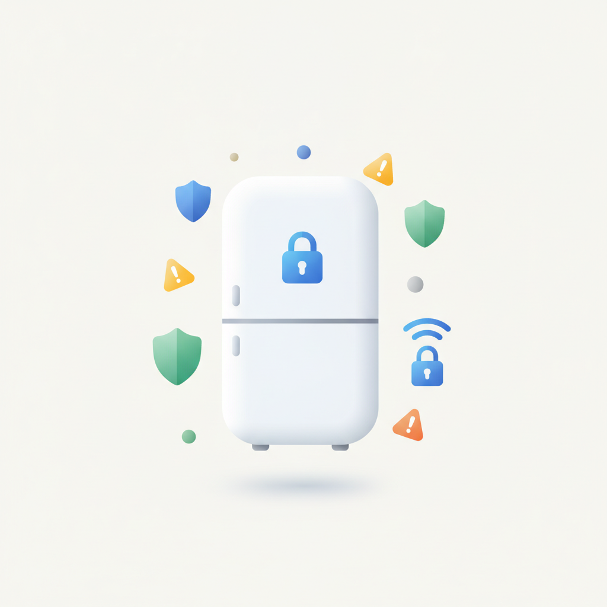
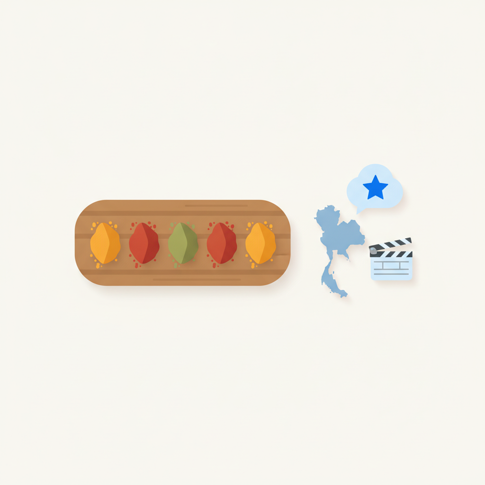
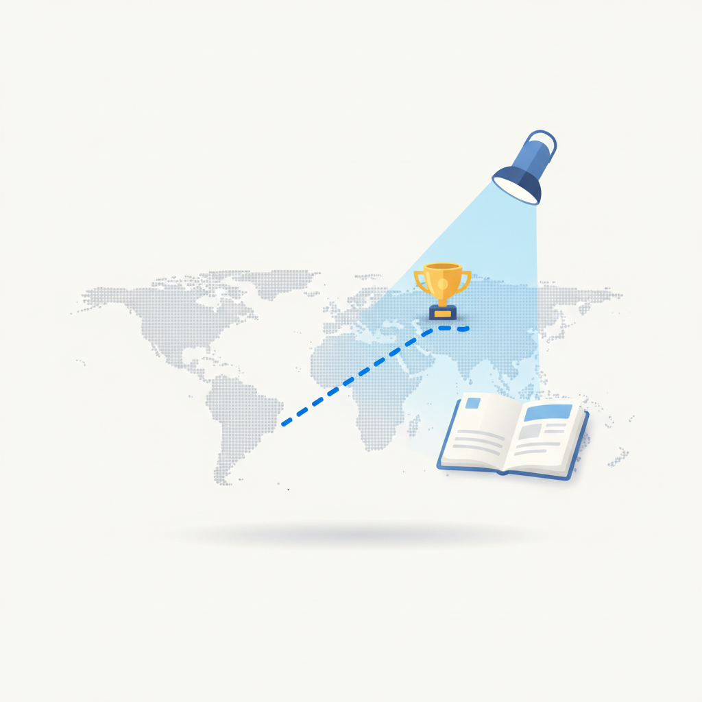
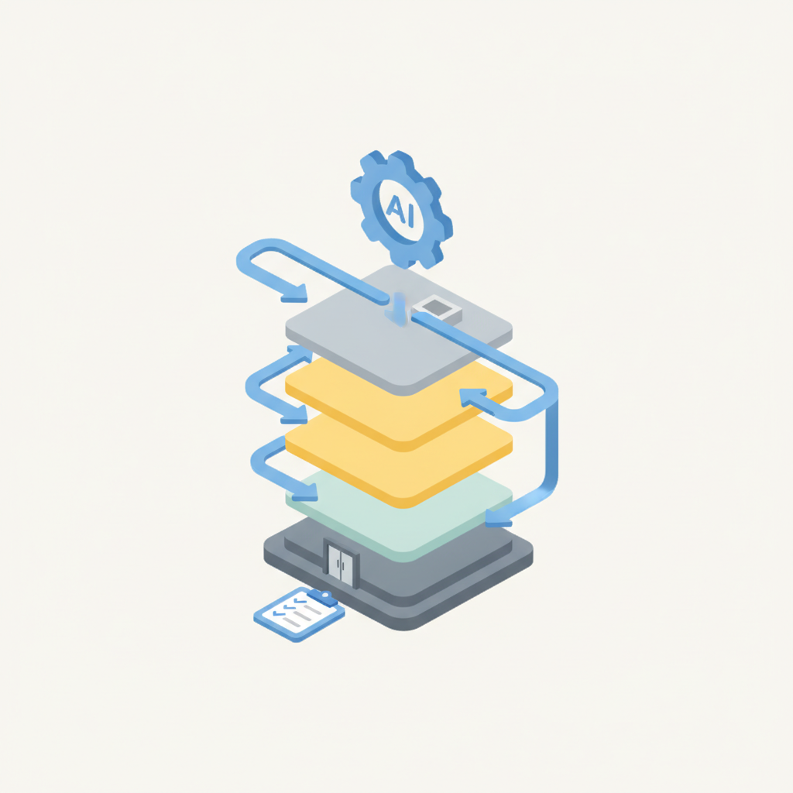
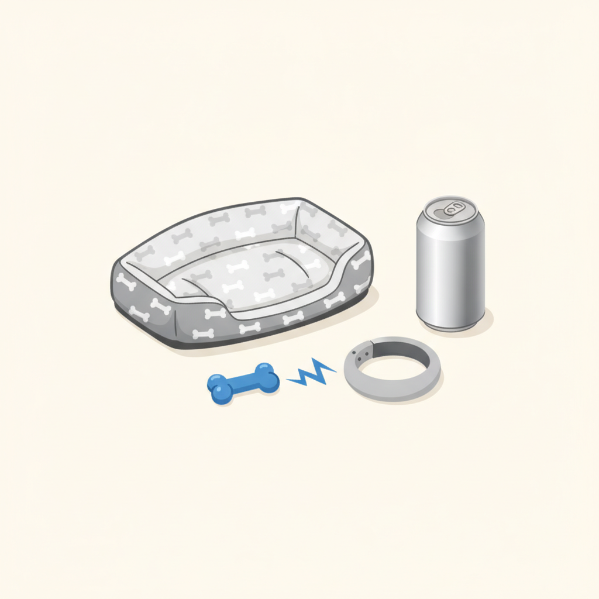
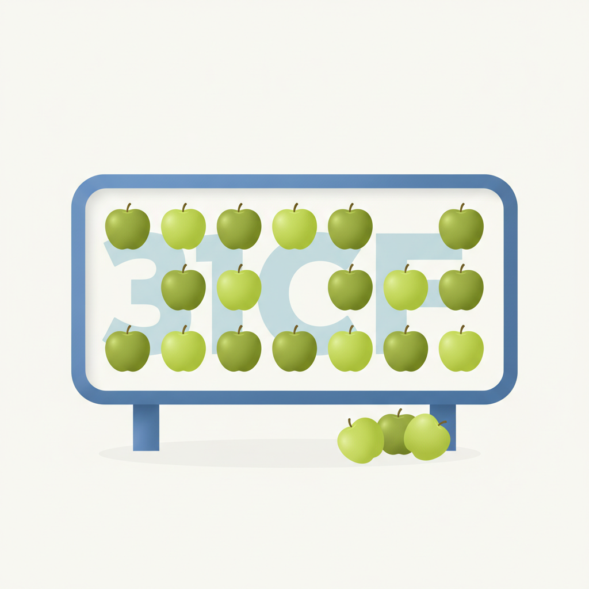

안녕하세요! 목요일 마케팅 소식 전해드립니다 😊 오늘은 헤이팝에서 소개한 쿠에른의 〈THE ICON, VALENCIA〉 전시 이야기가 흥미롭습니다. 11년이라는 시간 동안 하나의 제품이 어떻게 아이콘으로 자리 잡았는지를 되짚는 전시인데, 출발점이 '편안함'이라는 단순하고 명확한 가치였다는 점이 인상적입니다. 요즘처럼 브랜드가 수많은 메시지를 쏟아내는 환경에서, 하나의 감각적 경험에 집중해 긴 시간을 버텨낸 브랜딩의 결을 직접 확인할 수 있는 자리입니다.
오늘의 마케팅 뉴스에서는 카카오의 '모두의 AI' 소식도 살펴볼 만합니다. 카카오톡을 기반으로 외부 기업과 개발자가 전문 에이전트와 도구를 올릴 수 있는 개방형 AI 플랫폼을 구축하는 방향인데, 이미 일상에 깊이 자리한 메신저 플랫폼 위에 AI 생태계를 얹는다는 구조가 흥미롭습니다. 사용자 접점이 확보된 플랫폼이 AI 허브로 전환되는 흐름 속에서, 브랜드와 마케터가 어떤 방식으로 이 생태계 안에 진입할 수 있을지를 미리 그려볼 필요가 있습니다.
주말이 코앞으로 다가온 목요일 아침입니다, 오늘 하루도 활기차게 시작하시길 바랍니다! 🙌

1[가전테크 인사이트] 편리하지만 불안해요… 2026년 AI 가전에 보안과 신뢰라는 옷을 입히는 법
2026년 현재, 오픈서베이의 ‘AI 가전 트렌드 리포트 2026’에 따르면 국내 AI 가전 이용률은 생활가전 51.0%, 주방가전 39.1%를 기록하며 우리 삶의 일부로 빠르게 정착했습니다. 하지만 AI 기술이 고도화되고 경험이 쌓일수록 시장에서는 새로운 반전이 나타나고 있습니다. 바로 기술의 편리함 뒤에 숨겨진 사생활 및 개인정보 유출에 대한 소비자 불안감의 급증입니다. 1. 기대감 뒤에 커진 불안: […] The post [가전테크 인사이트] 편리하지만 불안해요… 2026년 AI 가전에 보안과 신뢰라는 옷을 입히는 법 appe
› 2카카오 ‘모두의 AI’, 외부 기업·개발자 연결해 개방형 AI 생태계 구축
카카오가 카카오톡을 기반으로 외부 기업과 개발자가 전문 에이전트와 도구를 제공하는 개방형 AI 플랫폼 ‘모두의 AI’를 개발하고 있다. 총 34개 기업·기관이 참여하며, 카카오는 에이전트 간 연동 규격과 수익 배분 모델을 마련해 이용자 요청 처리부터 실제 거래까지 연결한다는 계획이다. 올해 말 정식 출시를 앞두고 베타 테스트를 진행하며, 출시 직후 월간 활성 이용자(MAU) 500만명을 목표로 하고 2027년부터는 개인 맞춤형 ‘1인 1에이전트’를 단계적으로 도입한다.
›
3"로컬 인사이트는 독특한 향신료, 각 국가만의 특별한 풍미를 더하라!"… 수파랏 텝파랏 NUTs 공동창립자
[우즈베키스탄 타슈켄트=유다정 기자] "일본처럼 기술적인 작품을 만들 필요도, 미국 슈퍼볼 광고처럼 막대한 제작비를 쓸 필요도 없습니다. 중요한 건 자신들만의 스타일을 만드는 것입니다"태국의 독립 크리에이티브 에이전시 NUTs의 공동창립자이자 크리에이티브 파트너인 수파랏 텝파랏(Supparat Thepparat)이 중앙아시아 광고 업계에 전한 조언이다. 물론 이는 자신만의 색깔을 고민하는 한국 크리에이티브 업계에도 유효한 메시지다. 브랜드브리프는 졸보르스 크리에이티브 페스티벌(JOLBORS Creative Festival)에서 인터
›
4"국경은 그저 지도 위의 선일 뿐, 진짜 흥미로운 일은 선 넘을 때 일어나"… 조아오 카마초 하바스 라이프 CCO
[편집자주] 런던국제광고제(LIA)가 전액 지원하는 글로벌 인재 육성 프로그램 '크리에이티브 리에종(Creative LIAisons)'이 올해로 13회째를 맞았다. 전 세계에서 선발된 차세대 크리에이터들은 온라인으로 진행된 버추얼 코칭 프로그램과 라스베이거스 현장에서 진행된 온사이트 프로그램을 통해 글로벌 크리에이티브 리더들과 교류하고, 세미나와 패널 토론, 인터랙티브 워크숍, 실제 수상작 논의(Statue Discussions) 참관, LIA 레전드 수상자 수잔 크레들(Susan Credle)과의 파이어사이드 챗 등
›
5카카오, 현업 부서 찾아가는 ‘FDE’ 운영하는 이유
기업들이 인공지능(AI)을 도입하면서 직원 개인의 업무 생산성은 높아지고 있지만, 조직 전체의 생산성이 같은 속도로 개선되는 건 아니다. 직원들이 AI를 활용해 문서를 빠르게 작성하고 자료를 분석하더라도, 여러 부서가 협업하는 과정에서 발생하는 업무 지연까지 해결되지는 않기 때문이다. 카카오는 이 문제를 FDE 조직을 통해 풀고 있다. AI를 통해 조직 전반의 업무 흐름을 근본적으로 개선하기 위해서다. 중장기적으로는 개별 조직 내 문제 해결 경험을 회사 전반으로 확장할 수 있는 플랫폼도 구상하고 있다.
›
6[해외 크리에이티브] 반려견이 주인을 훈련한다? 리퀴드 데스·바크, 이색 협업 캠페인 공개
[ 매드타임스 최승은 기자] 반려견이 장난감을 물면 주인이 전기 자극을 받는 목걸이부터 사람이 누울 수 있는 관 모양의 반려견 침대까지. 생수 브랜드 리퀴드 데스(Liquid Death)와 반려동물 용품 브랜드 바크(BARK)가 기발한 발상과 블랙유머를 앞세운 협업 캠페인을 선보였다.두 브랜드는 광고대행사 톰브라스(Tombras)와 함께 반려견 장난감 시리즈를 출시한 데 이어, 이번에는 반려견이 주인을 훈련하도록 만든 목걸이와 관 모양 침대를 공개했다. 기존 반려동물 용품에 예상 밖의 기능과 디자인을 더해 웃음을 유도한다.먼저 선보
›
7[해외 크리에이티브] 사과를 가져갈수록 광고 문구가 드러난다…프랑스서 이색 옥외광고 등장
[ 매드타임스 한수경 기자] 프랑스 사과 브랜드 쾨르 드 렌(Cœur de Reine)이 시민들이 사과를 가져갈 때마다 숨겨진 문구가 드러나는 이색 옥외광고를 선보였다. 광고판을 실제 사과로 가득 채우고, 사람들이 사과를 하나씩 꺼내면 그 뒤에 가려져 있던 광고 문구가 나타나도록 했다.광고대행사 베리웰(Verywell)이 기획한 이번 캠페인은 지난 9월 30일 프랑스 툴루즈에서 진행됐다. 옥외광고 기업 JC데코(JCDecaux)의 광고판을 활용해 시민들이 무료로 사과를 가져갈 수 있도록 했다.광고판의 한쪽 면에는 '넉넉하고 개성이
›

브랜드 진단부터 지금 당장 해야 할 우선순위까지,
30분 무료 상담에서 함께 정리해드려요.
이미 수십 개 브랜드가 상담받았습니다.
내 브랜드처럼, 함께 고민하는 팀원의 마음으로 봅니다.
스타트업 대표·마케팅 담당자를 위한 30분